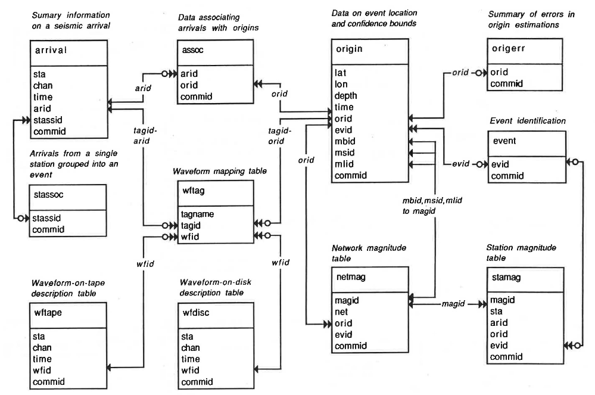

The Database
Learn about the tables, how to create them, and how to make new tables.
Introduction
Pisces uses relational database tables to represent station, event, and waveform information. One can think of database tables as a collection of inter-related sheets in an Excel spreadsheet, each holding columns and rows of data. The specific tables Pisces uses are defined in the Center for Seismic Studies (CSS) 3.0 seismic schema, and implemented in an SQL relational database.
SQL databases are ubiquitous, and describing them in detail is beyond the scope of this tutorial. For further guidance or tutorials, please consult the web. Before continuing, however, here are two things to remember:
-
You don't have to write SQL.
Pisces uses the SQLAlchemy package (SQLA) and its Object Relational Mapper to represent database tables.
The SQLAlchemy Object Relational Mapper presents a method of associating user-defined Python classes with database tables, and instances of those classes (objects) with rows in their corresponding tables. --Mike Beyer, creator SQLAlchemy
In other words, we can work with familiar Python concepts (classes, instances, and methods) instead of writing SQL (though you can still write SQL if you want). This doesn't mean you can ignore the SQL-ness of your database. You should understand the concepts, you just don't have to write and manage SQL strings.
-
You don't have to install a relational database management system (DBMS).
You already have one. SQLite is part of the Python Standard Library, and SQLAlchemy is compatible with SQLite. SQLA is also compatible with many other database backends, so you could scale up and use Oracle or PostgreSQL if it makes sense for your project, and you wouldn't have to change your code.
The core tables
Pisces comes with the 20 prototype tables defined in the CSS 3.0 seismic schema. These are described in detail in the original specification (Anderson et al., 1990). Below are the entity-relationship diagrams for the CSS 3.0 schema from Anderson et al. (1990).
Primary tables
(only primary and unique keys are shown)

Lookup tables
(only primary and unique keys are shown)

Anderson, J., Farrell, W. E., Garcia, K., Given, J., and Swanger, H. (1990). Center for Seismic Studies version 3 database: Schema reference manual. Technical Report C90-01, Center for Seismic Studies, 1300 N. 17th Street, Suite 1450, Arlington, Virginia 22209-3871. PDF (19 MB)
The Pisces implementation
Pisces implements CSS 3.0 schema with relatively few constraints:
- Primary keys and unique keys are defined, but foreign keys are not. All joins must be explicit.
- ids (e.g. orid, wfid) are not automatically incremented. You must use a counter and the "lastid" table.
- There are no indexes (internal database structures that speed up queries on certain columns or sets of columns).
- Any column can take an NA value, which will be assigned if not otherwise specified.
This is done to offer users the flexibility to maintain a database to a level of rigor commensurate with the project. A single-user with a 2-year project database may only ever use the origin, wfdisc, arrival, and assoc tables, and doesn't want to deal with foreign keys, whereas a multi-user global database may need to populate most/all tables and use consistent ids. Both are possible.
Extending the schema
Defining new tables
The core tables don't describe everything you might care about, such as stacked cross-correlation functions. Here we'll reproduce the "ccwfdisc" cross-correlation descriptor table from http://www.iris.edu/dms/products/ancc-ciei/, which looks like this (sic):

We'll define our new table in a file "mytables.py" by doing the following:
- Import our css3 prototypes into the
cssnamespace. - Inherit from
css.Base, so that the Ccwfdisc table is a proper SQLAlchemy table, and so that theinfo=dictionaries are used properly in Pisces - Name the table with
__tablename__ - Specify the primary and unique constraints with
__table_args__. Each table needs at least a primary key constraint. - Re-use a number of known columns with
.copy() - Define new columns, including the
infodictionary for Pisces.
mytables.py
import sqlalchemy as sa
import pisces.schema.css3 as css
class Ccwfdisc(css.Base):
__tablename__ = 'ccwfdisc'
__table_args__ = (sa.PrimaryKeyConstraint('wfid'),
sa.UniqueConstraint('wfid', 'dir', 'dfile'))
sta1 = css.sta.copy()
net1 = css.net.copy()
sta2 = css.sta.copy()
net2 = css.net.copy()
chan1 = css.chan.copy()
chan2 = css.chan.copy()
time = css.time.copy()
wfid = css.wfid.copy()
endtime = css.endtime.copy()
nsamp = css.nsamp.copy()
samprate = css.samprate.copy()
snrn = sa.Column('snrn', sa.Float(24),
info={'default': -1.0 ,'parse': float, 'width': 16, 'format': '16.6f')
snrp = sa.Column('snrp', sa.Float(24),
info={'default': -1.0 ,'parse': float, 'width': 16, 'format': '16.6f')
sdate = sa.Column('sdate', sa.Integer,
info={'default': -1 ,'parse': int, 'width': 8, 'format': '8d')
edate = sa.Column('edate', sa.Integer,
info={'default': -1 ,'parse': int, 'width': 8, 'format': '8d')
stdays = sa.Column('stdays', sa.Integer,
info={'default': -1, 'parse': int, 'width': 6, 'format': '6d'))
range = sa.Column('range', sa.Float(24),
info={'default': -1.0 ,'parse': float, 'width': 10, 'format': '10.3f')
tsnorm = sa.Column('tsnorm', sa.Float(53),
info={'default': -1.0 ,'parse': float, 'width': 14, 'format': '14.4f')
datatype = css.datatype.copy()
dir = css.dir.copy()
dfile = css.dfile.copy()
foff = css.foff.copy()
lddate = css.lddate.copy()
Column info
The info dictionary for each column needs the following entries, at minimum:
default: The value used for the column when it is otherwise not specified.parse: A callable that accepts the fixed-width string and returns the right type for the database.format: The column's external format, from the Python string format specification mini-language.
There are some differences between the Fortran-style "external format" and those used by Python. In Python, the type characters may be different from Fortran, and they always follow the width. See the following table for a few examples:
| Description | Fortran | Python |
|---|---|---|
| 6-character string | a6 |
6.6s |
| 8-digit integer | i8 |
8d |
Create a table
To create the table in a database, just use SQLAlchemy syntax:
import sqlalchemy as sa
from mytables import Ccwfdisc
engine = sa.create_engine('sqlite:///mydatabase.sqlite')
Ccwfdisc.__table__.create(engine)
For every ORM class, there is a hidden __table__ object that has a create method.
This method accepts an Engine instance that points to a specific database, where it will be created.
Defining new prototype tables
You can use the previous table with any database, as long as the table will be called "ccwfdisc". If you want to re-use this table structure across multiple table names without having to repeat the previous definition each time, you'll need to define a new prototype table (abstract table in SQLAlchemy).
This is how the "ccwfdisc" table would be defined, as a new prototype.
mytables_abs.py
import sqlalchemy as sa
from sqlalchemy.ext.declarative import declared_attr
import pisces.schema.css3 as css
class Ccwfdisc(css.Base):
__abstract__ = True
@declared_attr
def __table_args__(cls):
return (sa.PrimaryKeyConstraint('wfid'),
sa.UniqueConstraint('wfid', 'dir', 'dfile'))
sta1 = css.sta.copy()
net1 = css.net.copy()
sta2 = css.sta.copy()
net2 = css.net.copy()
chan1 = css.chan.copy()
chan2 = css.chan.copy()
time = css.time.copy()
wfid = css.wfid.copy()
endtime = css.endtime.copy()
nsamp = css.nsamp.copy()
samprate = css.samprate.copy()
snrn = sa.Column('snrn', sa.Float(24),
info={'default': -1.0 ,'parse': float, 'width': 16, 'format': '16.6f')
snrp = sa.Column('snrp', sa.Float(24),
info={'default': -1.0 ,'parse': float, 'width': 16, 'format': '16.6f')
sdate = sa.Column('sdate', sa.Integer,
info={'default': -1 ,'parse': int, 'width': 8, 'format': '8d')
edate = sa.Column('edate', sa.Integer,
info={'default': -1 ,'parse': int, 'width': 8, 'format': '8d')
stdays = sa.Column('stdays', sa.Integer,
info={'default': -1, 'parse': int, 'width': 6, 'format': '6d'))
range = sa.Column('range', sa.Float(24),
info={'default': -1.0 ,'parse': float, 'width': 10, 'format': '10.3f')
tsnorm = sa.Column('tsnorm', sa.Float(53),
info={'default': -1.0 ,'parse': float, 'width': 14, 'format': '14.4f')
datatype = css.datatype.copy()
dir = css.dir.copy()
dfile = css.dfile.copy()
foff = css.foff.copy()
lddate = css.lddate.copy()
The differences are minor:
- use
__abstract__ = Trueinstead of assigning a__tablename__ - use the
@declared_attrdecorator with a__table_args__function that returns the constraint tuple.
And this is how the prototype would be implemented and re-used in two different tables, 'ccwfdisc' and 'TA_ccwfdisc'.
mytables2.py
import mytables_abs as ab
class Ccwfdisc(ab.Ccwfdisc):
__tablename__ = 'ccwfdisc'
class TA_Ccwfdisc(ab.Ccwfdisc):
__tablename__ = 'TA_ccwfdisc'
These two tables look the same, have different names, and can reside in the same database.